我们爱上中文课
Chúng tôi yêu thích môn tiếng Trung Quốc
Mục tiêu: sử dụng câu so sánh để nói sự khác biệt cụ thể/nhỏ; nắm cách dùng câu có hai tân ngữ để diễn đạt ý cho, tặng.
🔥 Khởi động
1. Chọn hình tương ứng: A 教 B 花 C 新年 D 希望 E 告诉 F 洗手间
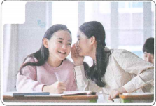
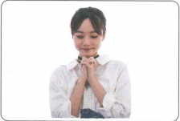
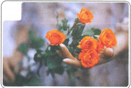
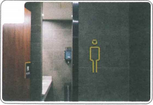
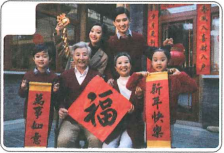
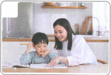
2. Nói sự khác biệt: 上楼/楼上 下楼/楼下 上网/网上
📚 Từ vựng 1
🎧 Nghe Bài khóa 1
（1）同学们想送给王老师什么？ A 花 B 衣服 C 中文书
（2）同学们今天要去哪儿看看？ A 教室 B 花店 C 商店
💬 Bài khóa 1
🧠 Câu có hai tân ngữ (2)
Câu có hai tân ngữ: động từ mang hai tân ngữ, thường tân ngữ thứ nhất chỉ người, tân ngữ thứ hai chỉ sự vật.
她拿给我一杯水。
他卖给我一本中文书。
📚 Từ vựng 2
🎧 Nghe Bài khóa 2
（1）今天的词比昨天多多少？ A 四个 B 七个 C 十个
（2）同学们写错了哪个字？ A 口 B 日 C 间
💬 Bài khóa 2
🧠 Câu so sánh (7)
Trong câu so sánh dùng “比”, cụm từ chỉ số lượng đặt sau tính từ để biểu thị sự khác biệt cụ thể.
今天的词比昨天多了十个。
姐姐比我大三岁。
📚 Từ vựng 3
🎧 Nghe Bài khóa 3
（1）这个本子是在哪儿买的？ A 商店 B 超市 C 网上
（2）安妮让白家月送给她什么礼物？ A 本子 B 咖啡 C 咖啡杯
💬 Bài khóa 3
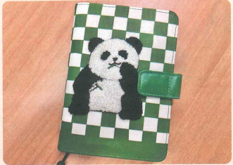
🧠 Câu so sánh (8)
Trong câu so sánh dùng “比”, “一点儿” hoặc “一些” đặt sau tính từ để biểu thị sự khác biệt không lớn.
比我们一起买的那个本子贵一点儿。
姐姐比我高一点儿。
📚 Từ vựng 4
📖 Bài khóa 4
（1）安妮送了白家月一个新年礼物。 （ ）
（2）白家月送了王老师漂亮的花。 （ ）
✏️ Bài tập tổng hợp
Chọn: A 上网 B 可能 C 班 D 告诉 E 里面
（1）你们 ______ 有多少学生？
（2）我经常 ______ 听歌、看电影。
（3）教室的门开着，但是 ______ 没有人。
（4）小李呢？—— ______ 去洗手间了。
（5）姐姐，家月 ______ 我你已经接到她们了。
🖼️ Điền từ vào chỗ trống theo tranh
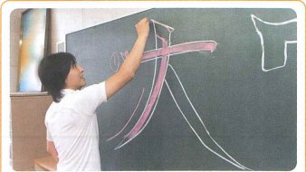
老师 ______ 我们新的汉字。
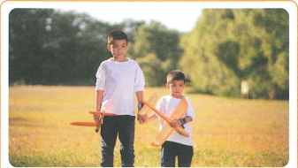
哥哥比我大 ______，我喜欢跟他玩。
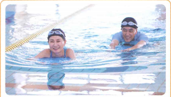
妻子游得 ______ 丈夫快 ______。
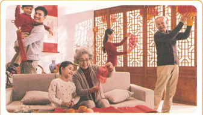
我们一起高高兴兴地过 ______。
🎭 Hoạt động trên lớp
Sắp đến năm mới rồi, hai người một nhóm, tặng quà cho nhau và mời đối phương đến nhà dự tiệc. Cố gắng sử dụng tối đa từ vựng và điểm ngôn ngữ đã học.
B：这么好啊，你还给我准备了礼物。……
🎯 Tổng kết Bài 13
✓ Câu có hai tân ngữ với 拿、送、卖、给.
✓ So sánh bằng 比 với cụm từ chỉ số lượng.
✓ So sánh khác biệt nhỏ với 一点儿 / 一些.
✓ Từ trọng tâm: 新年、教、花、希望、上面、洗手间、里面、笔、可能、上网、那样、告诉、班.